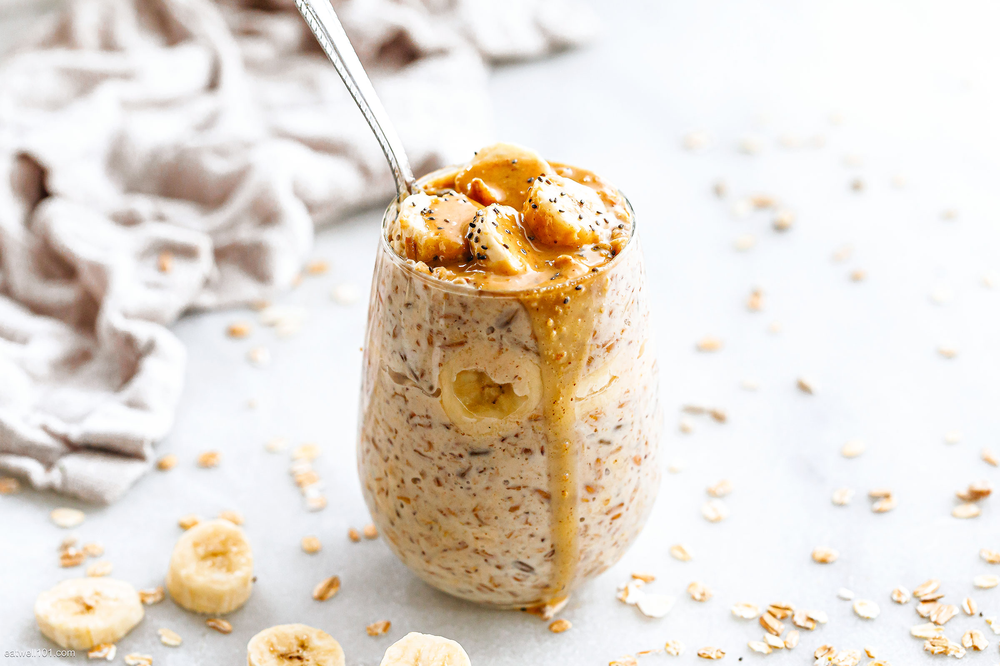

Overnight Peanut Butter Protein Oats

Experience the comforting embrace of nutty goodness in the Peanut Butter
Overload Protein Overnight Oats
The oats mingle with casein protein, creating a substantial canvas for the
dynamic duo of creamy peanut butter and powdered peanuts. The velvety
peanut butter contributes a lush depth, while powdered peanuts infuse a
unique nuttiness. Beneath this rich tapestry lies a bed of skyr, offering
a subtle tang that balances the flavors. A symphony of textures and earthy
notes harmonize to bring you a hearty, protein-packed breakfast.
Macros
- Calories: 522
- Carbs: 49g
- Fats: 13g
- Protein: 49g
Ingredients
- 50g oats
- 15g casein vanilla
- 150g skyr
- 10g peanut butter
- 26g PB2
- 100g water
Instructions
-
Mix 50 grams of oats and 15 grams of casein vanilla protein powder in
a bowl.
-
Add 26 grams of powdered peanuts (PB2) and 10 grams of creamy peanut
butter to the mixture.
- Stir in 150 grams of plain skyr or non-fat yogurt.
- Add 100 grams of water and mix until creamy and smooth.
- Refrigerate the mixture overnight.
-
Wake up to your Peanut Butter Overload Protein Overnight Oats and
enjoy!
(Back to top)
(HomePage)